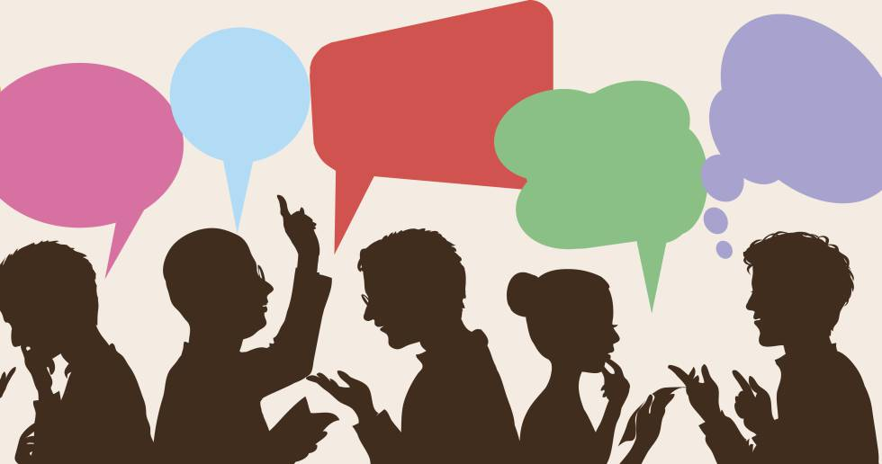
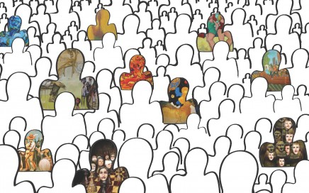

La psicología social es una rama dentro de la psicología que analiza los procesos de índole psicológica que influencian al modo en que funciona una sociedad, así como la forma en que se llevan a cabo las interacciones sociales. En suma, son los procesos
sociales los que modulan la personalidad y las características de cada persona. También se suele describir a la psicología social como la ciencia que inquiere acerca de los fenómenos sociales, tratando de desentrañar las leyes y principios
por los que se rige la convivencia entre humanos. Así pues, esta rama de la psicología se encarga de investigar las distintas organizaciones sociales, intentando extraer patrones de conducta de las personas que conforman el grupo, sus
roles y el conjunto de situaciones que modulan su comportamiento.


El objeto de estudio de la psicología social son, como hemos dicho, la influencia de las relaciones sociales sobre la conducta y los estados mentales de las personas. A este efecto, uno de las teorías clave en esta disciplina es la del interaccionismo
simbólico. Uno de sus antecesores, George H. Mead, desarrolló un profundo estudio sobre lenguaje, gestos y conducta, como productos de las relaciones interpersonales que permiten la vida en comunidad y, concretamente, sus interacciones
personales cara a cara. Obviamente, en nuestras sociedades existen organizaciones e instituciones constituidas alrededor de ciertos condicionantes socioculturales que son un producto de la interacción entre personas. Siendo así, no es
difícil imaginar que existe una conciencia colectiva que nos facilita la comprensión de estas articulaciones sociales. La psicología social, pues, estudia los procesos psicológicos y sociales observables, cosa que nos ayuda a entender
cómo actuamos los individuos cuando formamos parte de grupos o sociedades. La psicología social también engloba el estudio de las actitudes personales y la influencia (bidireccional) con el pensamiento social.